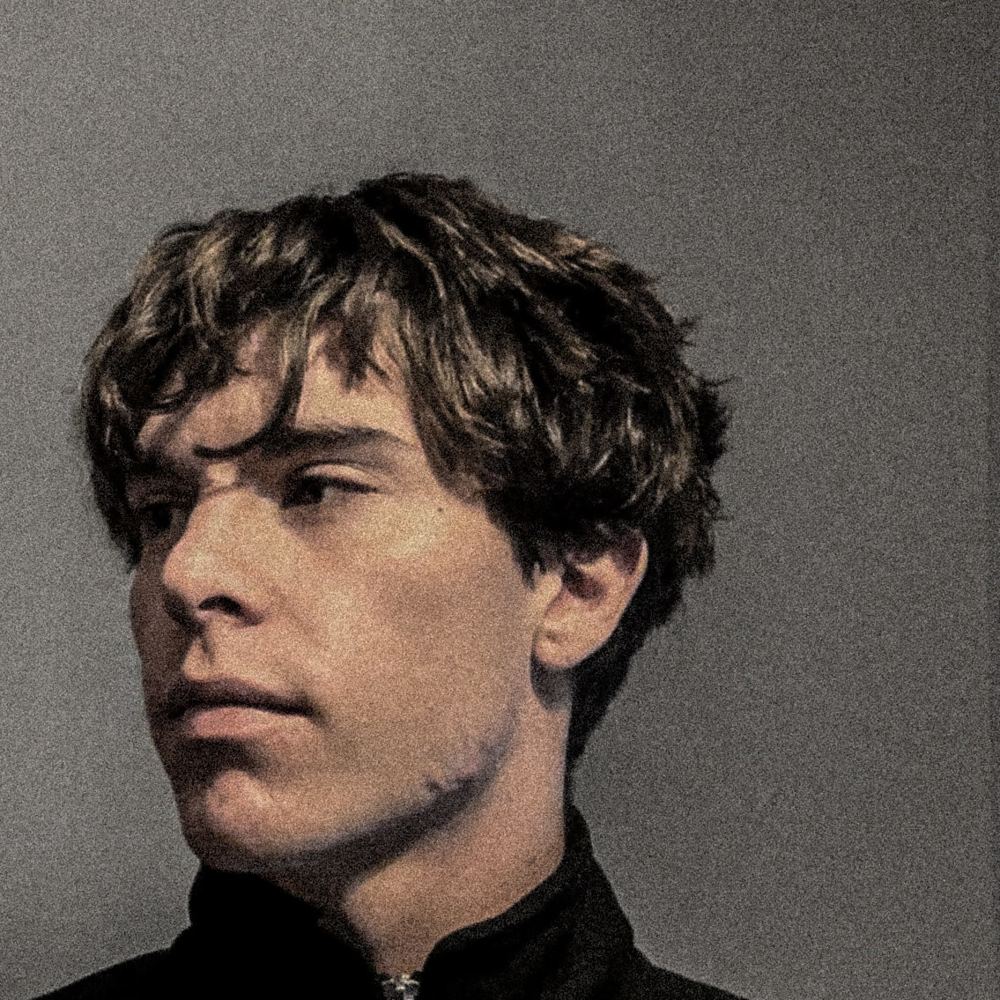

Progetto esperienze digitali che uniscono estetica, funzionalità e strategia. Dal concept al prototipo, ogni dettaglio è pensato per l’utente.

Sono un UX/UI Designer con una forte propensione verso Motion Design e Interaction Design. Il mio processo nasce sempre da un'attenzione particolare all'utente, immedesimandomi in ogni suo bisogno, per poi concentrarmi sul suo coinvolgimento attraverso visual e scelte di design mirate. Sono sempre in un percorso di crescita come designer, cercando di ampliare le mie competenze e aggiornarmi con le esigenze del momento.
Le competenze chiave che guidano il mio processo — dalla ricerca all'handoff, con AI come acceleratore.
Conduco interviste, survey e analisi comportamentale per individuare bisogni reali e frustrazioni degli utenti, traducendo gli insight in architetture informative e decisioni progettuali solide.
Conduco sessioni di user testing su prodotti e prototipi esistenti per capire dove gli utenti incontrano ostacoli, e costruisco survey mirate sia per analisi as is e confronto con i competitor, così da fondare ogni decisione su dati reali e preferenze degli utenti.
Progetto sitemap, user flow e architetture dell'informazione chiare e navigabili, e costruisco user journey map per evidenziare touchpoint, ostacoli e opportunità lungo l'esperienza utente.
Traduco strategia e ricerca in wireframe low/high fidelity e in prototipi interattivi in Figma, progettando con logiche responsive e con attenzione particolare ai breakpoint e alle strutture più adatte ai framework front-end utilizzati dagli sviluppatori, così da validare le soluzioni prima dello sviluppo e rendere il passaggio operativo più fluido.
Progetto interfacce intuitive nel rispetto degli standard WCAG, curando contrasto, gerarchia visiva, leggibilità e navigazione tramite screen reader con aria-label e alt text appropriati, e ne verifico la fruibilità attraverso test di usabilità.
Progetto animazioni 2D/3D, micro-interazioni e transizioni con funzione narrativa e funzionale, per guidare l'attenzione e rafforzare il brand anche in creatività per campagne ADV e social media.
Realizzo interfacce forti sul piano visivo, coerenti con brand identity e tone of voice del cliente, con attenzione a tipografia, gerarchia e composizione, gestendo design system e librerie di componenti.
Creo sistemi visivi versatili, con elementi di branding pensati per essere utilizzati in modo coerente dal fisico al digitale. Curo ogni materiale grafico di supporto, che sia per i social o per campagne pubblicitarie.
Conduco test mirati sugli utenti per validare scelte di design ed esplorare nuove possibilità, raccogliendo insight da trasformare in modifiche, in un continuo processo di miglioramento del prodotto.
Le mie conoscenze di HTML5 e CSS3 mi permettono di progettare interfacce tecnicamente coerenti e di preparare un handoff preciso per lo sviluppatore, riducendo ambiguità e tempi di allineamento in fase di implementazione.
Integro l'intelligenza artificiale nella ricerca UX per analizzare più rapidamente insight, nello sviluppo di asset visivi per esplorare direzioni creative, e nella trasformazione dei prototipi in codice, convertendo interfacce Figma in codice pronto per lo sviluppatore.
Cerco uno stage o un’opportunità junior. Se ti piace il mio stile, contattami — rispondo entro 24h.
Contattami ora